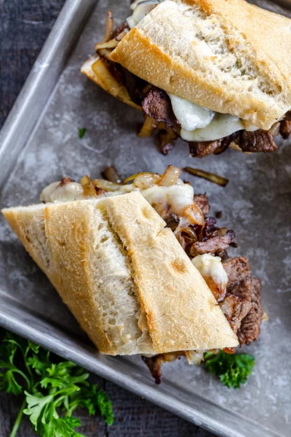

Steak Sandwich

Description
The recipe the steak is grilled just right, seasoned with a rich blend of spices and fresh garlic, then topped with melted cheese. The steak is piled onto a toasted French bread spread with a creamy, savory sauce and a generous layer of sauteed onions and peppers.
Ingredients
Herb Butter
- 1/2 cup Unsalted Butter softened
- 1 tbsp fresh dill diced
- 3 garlic cloves
Steak Sandwich
- 1 tbsp oil
- 1 lb steak
- 1 tbsp salt adjust to taste
- 1 large yellow onion
- 4 slices Havarti cheese
- 1 baguette
Instructions
- To prepare herb butter spread, combine butter together with crushed garlic and diced dill, mix until you get the same consistency. Set aside.
- Slice the steak into thin strips.
- Preheat an oiled skillet to high heat. Add beef to the skillet and season it generously with salt. Cook until the beef is just golden, remove from the skillet. Set aside.
- Preheat an oiled skillet to high heat. Add beef to the skillet and season it generously with salt. Cook until the beef is just golden, remove from the skillet. Set aside.
- Slice baguette lengthwise, spread herb butter over both sides of the bread. Follow by slices of steak, onion and topping it off with cheese slices.
- Keep the sandwich open and broil for about 2 minutes or until cheese is bubbly and melted.
- Serve right away, while it's still warm.
Recipes